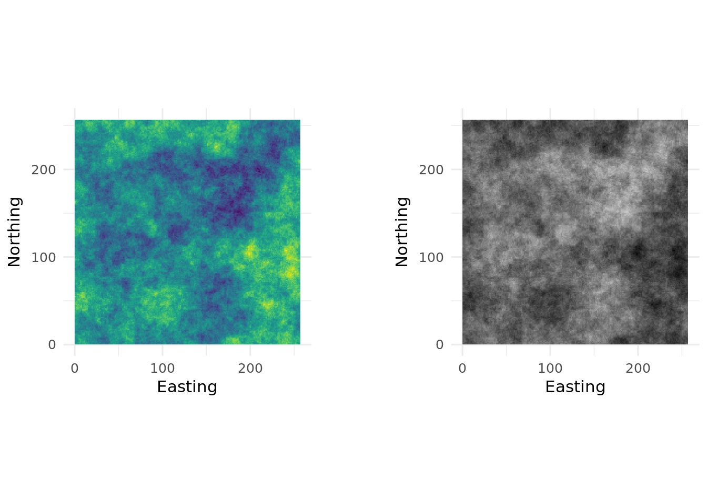

landscapetools provides utility functions to work with landscape data (raster* Objects).
The following functions are implemented:
Themes:
theme_nlm, theme_nlm_grey: Opinionated ggplot2 theme to visualize raster (continous data). theme_nlm_discrete,theme_nlm_grey_discrete: Opinionated ggplot2 theme to visualize raster (discrete data). util_import_roboto_condensed: Import Roboto Condensed font for theme_nlm.
Utilities:
util_binarize: Binarize continuous raster values, if > 1 breaks are given return a RasterBrick. util_classify: Classify a raster into proportions based upon a vector of class weightings. util_merge: Merge a primary raster with other rasters weighted by scaling factors. util_raster2tibble, util_tibble2raster: Coerce raster* objects to tibbles and vice versa. util_rescale: Linearly rescale element values in a raster to a range between 0 and 1
Installation
You can install the development version from GitHub with:
# install.packages("devtools")
devtools::install_github("marcosci/landscapetools")Usage
library(patchwork)
library(nlmr)
library(landscapetools)
library(ggplot2)
# Create artificial landscape
nlm_raster <- nlm_mpd(ncol = 200, nrow = 200, roughness = 0.8)
#> nlm_mpd returns RasterLayer that fits in the dimension 2^n+1Binarize
binary_stack <- util_binarize(nlm_raster, breaks = c(0.3, 0.5, 0.7, 0.9))
util_facetplot(binary_stack) ### Classify
### Classify
classified_raster <- util_classify(nlm_raster,
c(0.5, 0.25, 0.25),
level_names = c("Land Use 1", "Land Use 2", "Land Use 3"))
util_plot(classified_raster, discrete = TRUE)
Merge
pL <- nlm_edgegradient(ncol = 100,
nrow = 100)
sL1 <- nlm_distancegradient(ncol = 100,
nrow = 100,
origin = c(10, 10, 10, 10))
sL2 <- nlm_random(ncol = 100,
nrow = 100)
mL1 <- util_merge(pL,
c(sL1, sL2),
scalingfactor = 1)
util_plot(mL1) ### Visualization
### Visualization
g1 <- util_plot(nlm_raster) + guides(fill = FALSE)
g2 <- util_plot_grey(nlm_raster) + guides(fill = FALSE)
g1 + g2
Meta
- Please report any issues or bugs.
- License: GPL3
- Get citation information for
landscapetoolsin R doingcitation(package = 'landscapetools') - We are very open to contributions - if you are interested check Contributor Code of Conduct.
- Please note that this project is released with a Contributor Code of Conduct. By participating in this project you agree to abide by its terms.